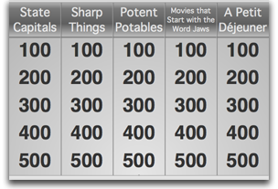

Host Window
Toolbar
- 1. View Selection Buttons:
- See the next section.
- 2. Timer:
- When a game is running, this will count down the time left.
- 3. Play/Pause:
- Click this to begin a game, pause a game, or resume a paused game. When a game is paused, all timers are paused and no one is allowed to buzz in.
- 4. Stop:
- Click this to stop a running game. When you stop a game, all questions used are reset so that when you click "Play" again all questions are available again.
Main Window
The main window's contents are split up into three views: "Controls", "Questions", and "Players." You switch between views by clicking one of these buttons. The currently selected view is marked by a green color.
Controls View
- 1. Host's Game View:
- This view is multi-purpose. It will allow the host to select questions from the list of categories, show the question, and also show answers when players buzz in. 
- 2. Buzzed-in Player:
- When a player buzzes in, their name will show up here. Once their attempt has been marked correct or incorrect, their name will disappear.
- 3. "Correct" Button:
- After a player attempts to answer a question, click this button to mark their answer as correct. This button is only enabled (i.e. clickable) from the time a player has buzzed in until the question timer runs out, this button is clicked, or the "Incorrect" button is clicked.
- 4. "Incorrect" Button:
- After a player attempts to answer a question, click this button to mark their answer as incorrect. This button is only enabled (i.e. clickable) from the time a player has buzzed in until the question timer runs out, this button is clicked, or the "Correct" button is clicked.
Questions Tab
- 1. Categories and Questions:
- This tree view shows you your categories and their associated questions. You can have up to five categories per game and each category has five questions. The point value for each question starts with 100 points for the question at the top and increases by one hundred points for each following question. The fifth question is worth 500 points.
- 2. Question Text Input:
- Type the text for the selected question in this box. Press enter to start a new line. You can use this to write multiple-choice questions. Just put each option on it's own line.
- 3. Answer Text Input:
- Type the text for the selected question's answer in this box. You have the same formatting options here as you do in the question text input box.
Players Tab
- 1. Player Buzzer Status Light:
- This light indicates wheather or not a player has a button assigned to use as a buzzer. This light will be green if they have a buzzer assigned and red if they don't. If the controller that a player is using is removed, their light will turn red and they will need to set a new button using the "Set Buzzer" button (explained below).
- 2. Player Name:
- The name of the currently selected player shows up here for you to edit.
- 3. Player Points:
- This shows the number of points the currently selected player has. To edit, either type in a new value or click the up and down arrows to the right of the box to increase or decrease (respectively) the point value in increments of 100 points.
- 4. Set Buzzer Button:
-
Press this button to set the selected player's buzzer button. Once you press this button, a window will appear asking you to have that player press the button that they wish to use as a buzzer.

When you see this window, instruct that player to press the button they wish to buzz-in with and tell them to remember that button (if they are using a controller with more than one button). Once they press their button, the window will disappear and their status light should change to green. If they take too long or do not press a valid button in time, the window will disappear and their status light will remain red (or if they already had a valid button assigned, their light will remain green but their button will not have changed).
For more information on controllers/buzzers, please go to the Controllers page.
- 5. Add and Remove Player Buttons:
- Click the plus (+) button to add a new player. Click the minus (-) button to remove the selected player.